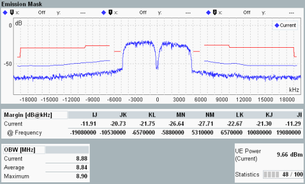

The spectrum emission of the UE is measured in the preselected slot. The results are displayed in a diagram and as a table of statistical results.

The measurement covers a symmetric, 25 MHz wide frequency range around the UE center carrier frequency. The maximum display range is [carrier frequency -12.5 MHz, carrier frequency +12.5 MHz]. According to the specification 3GPP TS 34.121, a resolution filter of Gaussian shape with a bandwidth of 30 kHz, 100 kHz or 1 MHz is used. All measured spectrum emission values are relative to the UE output power measured in a 3.84 MHz bandwidth (reference power).
The example shows results measured with the 30 kHz filter bandwidth (lower blue curve, including the center) and 1 MHz bandwidth (curves at offset frequencies larger than 4 MHz).
Either the "Current", "Average" or "Maximum" values can be displayed in the diagram. The margin tables below the diagram provide all these values.
The margin and margin H tables contain values which are relevant for the limit check; see "Spectrum Emission Mask".
The margin values indicate the vertical distance between the spectrum emission mask and the result trace. Within each limit line section (e.g. AB) the margin represents the worst value, i.e. the maximum determined for the frequencies of the section:
Margin = maximum (P(f)trace - P(f)mask)
A positive margin indicates that the limit is exceeded. The X-position of each margin (offset frequency at which the margin has been found) is displayed below the margin value.
In the same way, the margin H values indicate distances to limit line H (additional requirements for single carrier in uplink).
The occupied bandwidth (OBW) is defined as width of a frequency range around the assigned channel frequency containing 99% of the total integrated power of the transmitted spectrum.
In the configuration with dual uplink carrier, the measurement is extended to the frequency range of 40 MHz around the center frequency between the two carriers. The results are analogical to the results of single uplink carrier. Margin H is not relevant in this setup.

For additional information, refer to "Common View Elements" and "Selecting and Modifying Views".